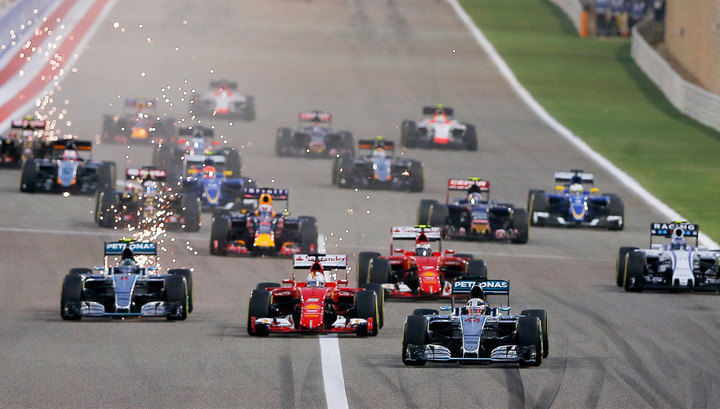

«Королевские автогонки»
Многие называют Формулу-1 «королевой автоспорта», «вершиной автоспорта», «королевской формулой», «королевскими автогонками». Формула-1 считается наиболее престижной гоночной серией в мире, и для большинства гонщиков выступление в ней становится целью всей жизни. С одной стороны, такое отношение связано с большой популярностью гоночной серии, а с другой — с высочайшими техническими достижениями Формулы-1, делающими её болиды самыми быстрыми гоночными машинами в рамках ограничений, устанавливаемых техническим регламентом. Несмотря на то, что из-за серьёзных ограничений регламента, скорости в Формуле-1 не самые высокие в автогонках, конкуренция между командами способствует повышению технического уровня по другим направлениям. Например, всё большему совершенствованию тормозной и аэродинамической систем. Потраченные миллиарды долларов и работа ведущих технических специалистов приводят к созданию узлов машины, наиболее эффективных при действующих ограничениях регламента.
 Формула-1 является самым дорогим видом автоспорта. Бюджеты успешных команд измеряются сотнями миллионов долларов. Гонорары ведущих пилотов и ведущих специалистов измеряются миллионами (а иногда десятками миллионов) долларов.
Быстрое прохождение круга требует от гонщика высочайшей концентрации. В течение полутора часов сердце гонщика бьётся с частотой 180 ударов в минуту, а в квалификации пульс ещё на 50 ударов в минуту выше.
Физические нагрузки, которые несут пилоты болидов во время гонки, в среднем значительно превосходят нагрузки летчика-истребителя во время полета и могут сравниться только с нагрузками космонавта в ракете во время старта. Пилот болида в течение гонки теряет до 3 килограммов массы тела, а чтобы не потерять сознание — пьет воду, которая подводится к его рту специальной системой.
Каждый болид "Формулы-1" использует основной принцип полета самолета с точностью до наоборот: если крылья самолета заставляют его подниматься в воздух, то "антикрыло" гоночного болида, наоборот, прижимает его к земле, чтобы он не слетел с трассы.
Здесь важен каждый нюанс. Автомобиль для "Формулы-1" состоит из 80 тысяч различных деталей. В одном болиде расположено более километра проводов, подключенных к огромному количеству датчиков и приборов.
Болид Формулы 1 разгоняется до 100 км/ч за 1.9 с. это самый быстрый показатель для автомобилей на механической тяге! Максимальная скорость болида составляет 340 км/ч. За гоночный сезон гонщики проезжают около 8 000 км. Около 250 000 часов уходит на разработку нового болида и включает до 4 500 чертежей. Номера гонщикам присваиваются в соответствии с положением каждой команды на чемпионате предыдущего сезона. Номер 13 не выдается никому. Стоимость каждого пройденного километра болидом составляет около 500 $.
«Лестница к вершине автоспорта»
Преодолевая жёсткую конкуренцию, почти всю жизнь гонщики движутся к вершине автоспорта, но лишь немногим удаётся достичь поставленной цели. Гоночную карьеру все пилоты обычно начинают в очень юном возрасте с картинга. Карты недорого стоят, имеют небольшие размеры и весьма безопасны, что делает эти машины идеальными кандидатами для обучения десятилетних детей. Затем спортсмены переходят в «младшие Формулы» национальных чемпионатов, среди которых по традиции выше всех ценятся чемпионаты Великобритании. Далее следуют европейские чемпионаты.
Кроме того, вид автогонок тем выше, чем мощнее участвующие в ней болиды. Во многих видах шоссейно-кольцевых автогонок гонщики выступают на одинаковых машинах, поэтому на первое место там выходит личное мастерство пилотов.
Лестница к вершине автоспорта сегодня представлена такими этапами, как:
- Картинг
- Мировая серия Рено (2,0), Формула Ford (англ.)
- Формула-3, GP3
- Мировая серия Рено (3,5)
- GP2 (предшественники — Формула-2 и Формула-3000), А1 Гран-при
- Формула-1
Ввиду кардинальных отличий в управлении автомобиля с открытыми колёсами и кузовной машиной, пилоты редко начинают свою карьеру в кузовных чемпионатах. Однако многие пилоты, особенно американского происхождения, начинают карьеру в американских гоночных сериях ChampCar, IndyCar и других. Но чаще всего, они там и остаются, не пытаясь пробиться в Формулу-1. Это связано с меньшей популярностью Формулы-1 в США и Канаде, чем в Европе или Южной Америке.
Попав в Формулу-1, пилоты уже зачастую не могут участвовать в других гоночных сериях из-за ограничений, накладываемых на них подписанным контрактом. Здесь играют свою роль и требования спонсоров команды, которых не устраивает выступление «их» гонщика за другие команды (с возможно другими спонсорами), и риск гонщика получить травму при участии в других гонках (и соответственно невозможность выступления за основную команду), и попросту нехватка времени. Гонщик также должен выделять время на общефизическую подготовку, знакомство с трассами и даже регулярно появляться на различных мероприятиях для прессы и спонсоров, организуемых командой.
Есть только две гонки, в которой регулярно участвуют действующие гонщики Формулы-1: это «гонка чемпионов» и картинговая гонка в парижском Дворце спорта «Берси» (ELF Masters Karting). Вместе с тем, обычно пилоты, не выступающие непосредственно в гонках (тестеры команды) могут пользоваться определённой свободой в перерывах между сезонами Формулы-1.
Единственное ограничение, накладываемое FIA на участие гонщиков в других сериях, было принято в 1958 году. Оно явно запрещало гонщику участие в более чем одной гонке за 24 часа. Ранее подобное ограничение уже применялось к этапам чемпионата мира в классе «Формула-1» и появилось оно в 1952 году после аварии Фанхио на Гран-при Италии. Хуан Мануэль за день до старта выступал в гонке в Северной Ирландии на трассе Dundrod Circuit, в Париже не успел на пересадку на свой самолёт и решил ехать в Монцу на машине. Проведя всю ночь за рулём, Фанхио прибыл в Монцу за пол часа до старта гонки. В состоянии сильнейшего переутомления Фанхио потерял контроль над машиной на втором круге гонки и в результате аварии получил серьёзнейшие травмы.
«Формула-1 - основные правила»
Чемпионат мира Формулы-1 проводится каждый год и состоит из отдельных этапов (имеющих статус Гран-при). В конце года выявляется победитель чемпионата. В Формуле-1 соревнуются как отдельные пилоты, так и команды. Пилоты соревнуются за титул чемпиона мира, а команды — за Кубок конструкторов.
Команды, участвующие в гонках Формулы-1, используют на Гран-при болиды собственного производства. Каждая команда сама создаёт шасси для своего болида. Моторы могут быть приобретены у стороннего производителя. За соответствием машин техническому регламенту следят стюарды Международной федерации автоспорта. Регламент и вся гоночная серия находится под управлением Международной автомобильной федерации FIA. Таким образом, задачей команды является не только нанять быстрого и опытного пилота и обеспечить грамотную настройку и обслуживание машины, но и вообще «с нуля» спроектировать и сконструировать болид.
Поскольку команды строят болиды по собственным технологиям и ввиду высокой конкуренции команд, в Формуле-1 постоянно рождаются оригинальные технические решения, что ведёт к прогрессу как гоночных болидов, так и дорожных автомобилей.
Болиды участников чемпионата должны соответствовать техническому регламенту Формулы-1 и пройти тест на ударопрочность.